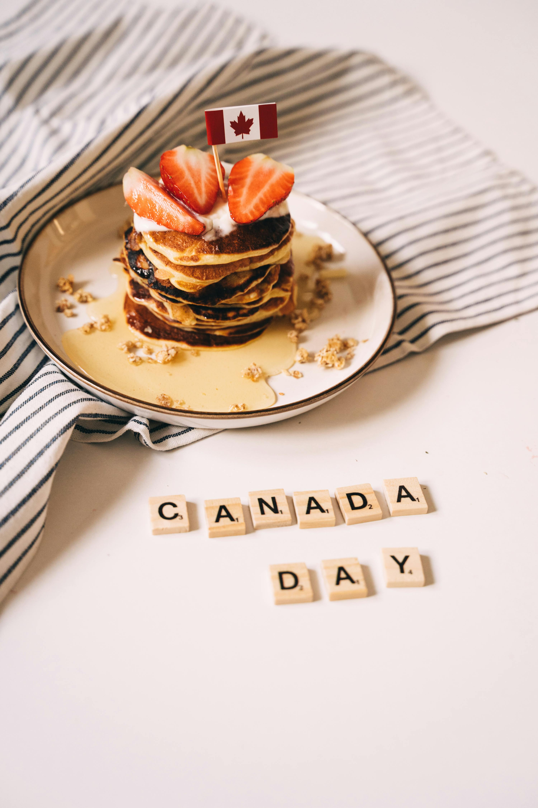

Best Travel Tips

- Plan Ahead: Research destinations, activities, and accommodations in advance to make the most of your trip.
- Pack Layers: Canada’s weather can vary greatly; pack layers to adjust to changing conditions.
- Stay Connected: Consider a local SIM card for your phone to avoid roaming charges.
- Learn Basic French: In Quebec, knowing some French can enhance your experience and interactions.
- Stay Hydrated: Carry a refillable water bottle to stay hydrated, especially during outdoor activities.
Best Cuisines and Dining Recommendations

- Poutine: Fries topped with cheese curds and gravy, a must-try Quebec dish.
- Maple Syrup: Sample dishes drizzled with Canada’s famous maple syrup.
- Butter Tarts: Sweet pastries filled with a sugary mixture, best enjoyed fresh.
- Local Seafood: Try the fresh catches in Atlantic Canada, especially lobster and scallops.
- Craft Beer: Explore the craft beer scene in cities like Toronto and Vancouver.
Best Accommodation Options

- Hotels: Major cities offer a range of hotels from luxury to budget options.
- Hostels: Great for backpackers and budget travelers; look for locations in city centers.
- Bed & Breakfasts: Experience local hospitality and home-cooked breakfasts.
- Airbnb: Unique stays in residential areas for a local experience.
- Cabins and Lodges: Stay close to nature with options in national parks.
Best Local Culture and Traditions
- Indigenous Culture: Engage with Indigenous communities and learn about their traditions and art.
- Multicultural Festivals: Experience celebrations such as Caribana and the Calgary Stampede.
- Hockey Games: Attend a local hockey game for a taste of Canadian sports culture.
- French Influence: Explore the rich French heritage in Quebec, including language and cuisine.
- Maple Syrup Festivals: Join in spring celebrations in Quebec and Ontario to taste fresh syrup.
Top Tourist Attractions
- Niagara Falls: A breathtaking natural wonder, best viewed from both Canadian and American sides.
- Banff National Park: Explore stunning mountain landscapes and outdoor activities year-round.
- Old Quebec City: A UNESCO World Heritage site with historic architecture and charming streets.
- CN Tower: Visit the iconic tower in Toronto for panoramic city views.
- Whistler Blackcomb: World-renowned ski resort and adventure destination.
Best Transportation Guides
- Public Transit: Major cities have efficient systems including buses, subways, and trams.
- Car Rentals: Ideal for exploring rural areas and national parks at your own pace.
- Train Travel: VIA Rail offers scenic train journeys across the country.
- Domestic Flights: Fast and convenient for traveling between major cities.
- Walking and Biking: Many cities are walkable or bike-friendly, making it easy to explore.
Best Outdoor Activities and Adventure
- Hiking: Explore countless trails in national parks like Banff and Jasper.
- Skiing/Snowboarding: Hit the slopes in Whistler or Banff during winter.
- Canoeing: Paddle in the pristine lakes of Ontario and Quebec.
- Wildlife Viewing: Spot bears, moose, and whales in their natural habitats.
- Camping: Experience the great outdoors by camping in national parks.
Best Weather and Best Time to Visit
- Summer (June - August): Warm weather, ideal for outdoor activities and festivals.
- Fall (September - November): Beautiful foliage and fewer crowds; perfect for hiking.
- Winter (December - February): Cold weather, great for skiing and winter sports.
- Spring (March - May): Mild weather, excellent for wildlife viewing and blooming flowers.
- Best Months to Visit: June to September for pleasant weather and vibrant festivals.